Meddbase supports a wide variety of workflows and processes and security is of utmost importance in the system.
There are several on-screen pop-ups, warnings and alerts throughout the application that appear in various situations, informing and warning users of important and often irreversible steps they are about to take.
There are other on-screen pop-ups users may see when using Meddbase that will not be listed in this article, e.g. pop-ups for signposting actions, configuration save confirmations and more
This article lists and describes types of on-screen pop-ups, warnings and alerts Meddbase users can encounter whilst using the system and the context in which those pop-ups, warnings and alerts appear.
These pop-ups, warnings and alerts are:
Access Denied pop-up
In Meddbase data security is of utmost importance and users' ability to interact with data and make changes in the system strictly governed by Security Policies. Click here for more details.
When a user attempts to take action in Meddbase that they are not permitted to take, they will be presented with an Access Denied pop-up, informing them of the specific permission they do not have.
The below example shows a user attempting to access company documents without having permission to do so.
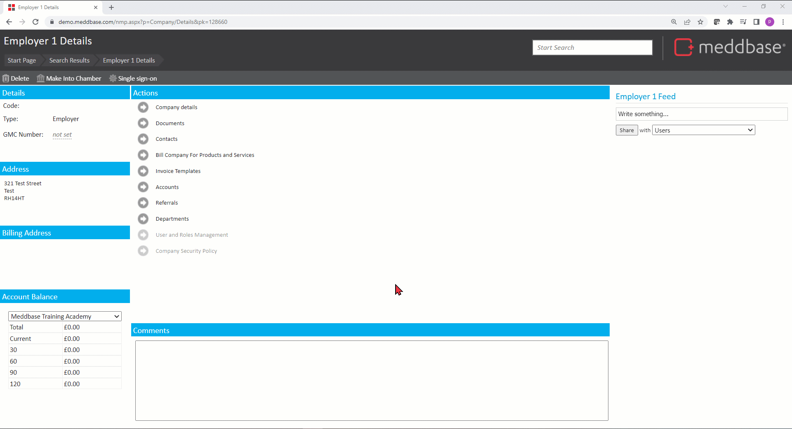
The user can Request Access and state the reason for the request, e.g. 'Accessing company documents is part of my daily job'. The request will be sent to the owner of the Security Policy that prevented the action.
The policy owner can Grant or Deny the request and modify the user's permissions or role group membership.
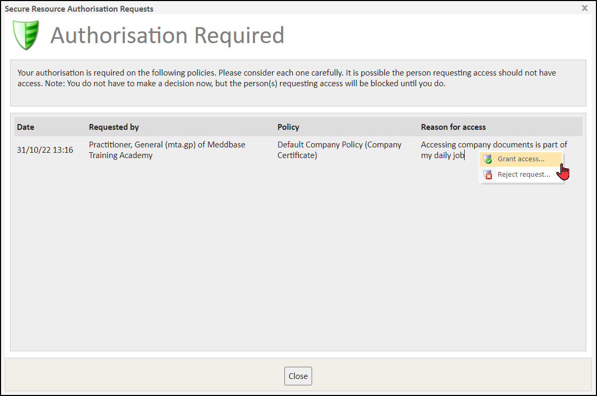
An appointment booked in Meddbase (booked in the application or via the Patient Portal, Fast Booking Portal or Referral Portal) has a Status*, reflecting the appointment workflow progress:
*During the process of conducting the appointment in Meddbase, its Status is updated by a user. Updating an appointment status is Final and can not be reversed. When an appointment status is about to be changed, the system displays a pop-up warning, asking the user to confirm the step.
Clicking on an appointment block takes the user to the Appointment Home page, where status update options are highlighted with different colours.
Clicking Patient has arrived (colour-coded green) displays the below pop-up
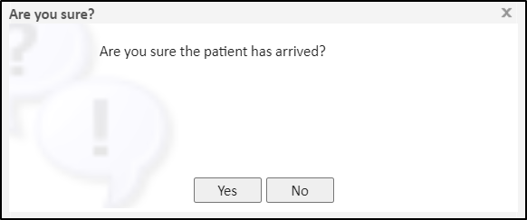
Clicking Yes will change the appointment status from Not Arrived to Arrived*
*If the setting found in Admin > Configuration > Accountancy > Invoice generation is set to On arrival, confirming this step can also raise an invoice
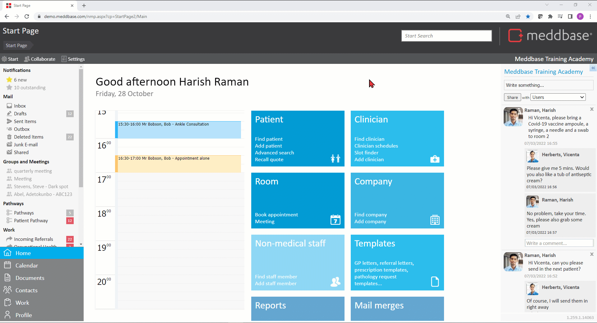
Confirming this step also changes the colour of the appointment block from light orange to blue on the session timeline.
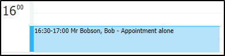
Typically the next appointment status update option is to change the status from Arrived to Being Seen.
Clicking Patient is being seen on the Appointment home page and subsequently clicking Yes on the pop-up warning changes the appointment status.
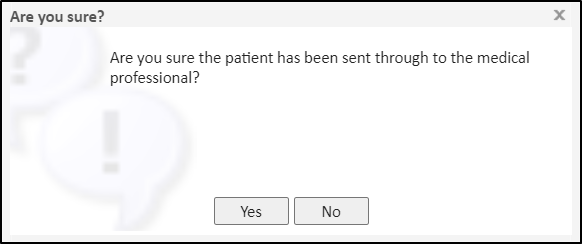
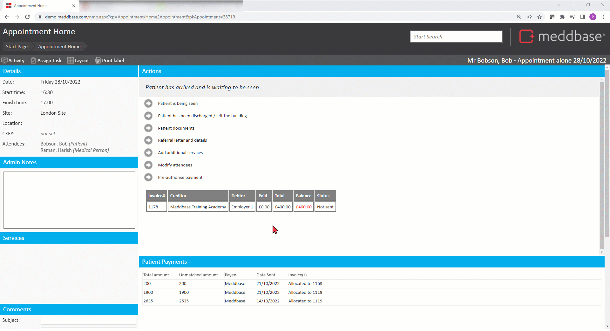
Confirming this step also changed the colour of the appointment block from blue to green on the session timeline.
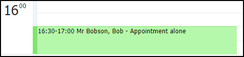
An appointment status can be changed to Discharged either:
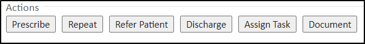
*The Discharge label can be changed as needed to, e.g. End Appointment etc.
Meddbase users can receive on-screen pop-ups containing additional information or warnings when booking Appointment Types and adding Services.
The messages to be displayed can be defined as needed:
Users have to click Accept on these pop-ups before they continue the booking process.
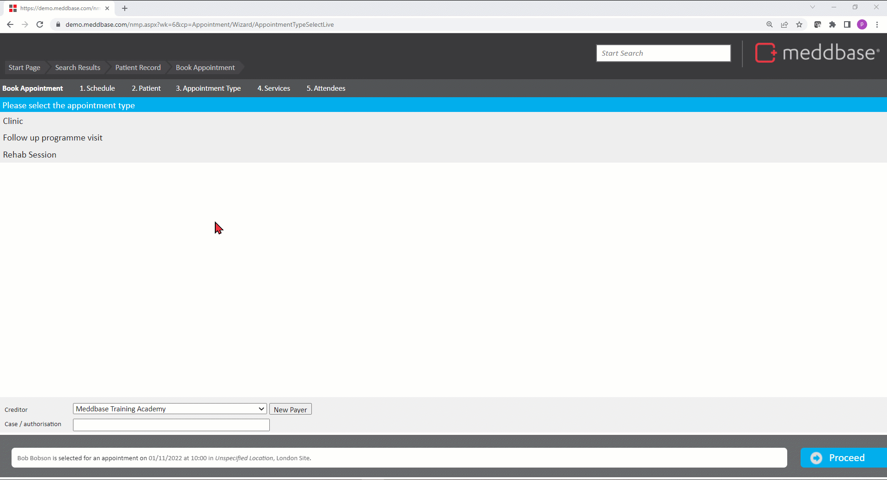
These messages or pop-ups can also appear for patients when booking appointments and modules in the Patient Portal.
The messages to be displayed can be defined as needed:
Adding free text in these fields will display the comment below the appointment or module name.
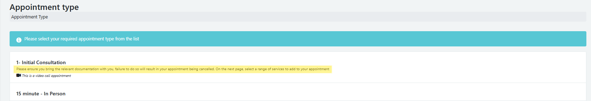
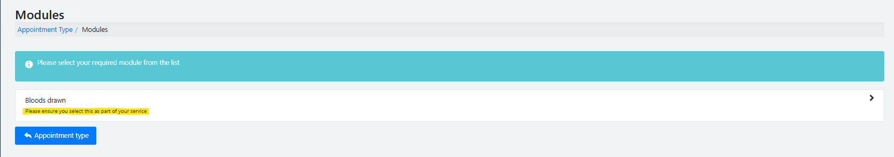
When selecting an appointment, If you require the message to be in a pop-up window which the patient has to confirm before proceeding, this is also possible by adding **NOTIFICATION** above your message in the Notes for Patient section in Appointment Admin.
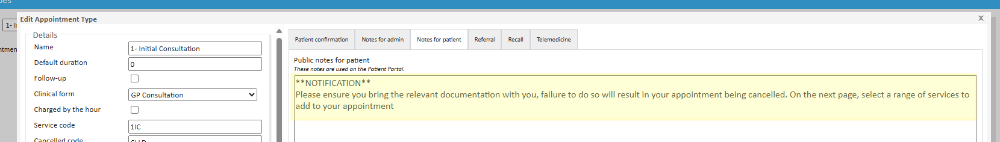
In the Patient Portal, a pop-up will appear once that appointment has been selected, and the patient will need to click Confirm or No, Cancel to proceed.
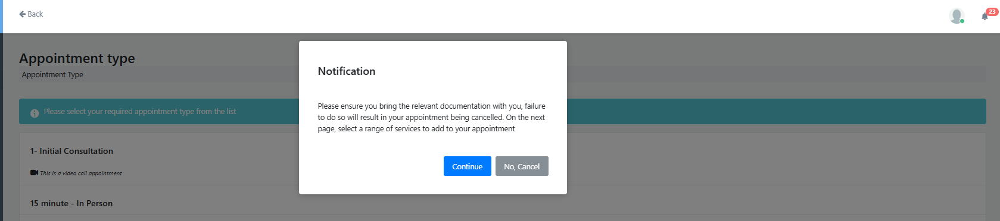
Meddbase has a built-in integration with First Data Bank who offer a centralised drugs database of over 70,000 drug products and packs.
When Medical Users (Clinicians/Doctors) prescribe drugs in Meddbase, Preparation Warnings* pop up on-screen. These include sensitivity/allergy alerts, drug-to-drug interaction warnings, as well as other warnings and disclaimers.
Click here for more details on prescribing drugs.
*The user must accept (acknowledge) these warning before they can complete the prescription.
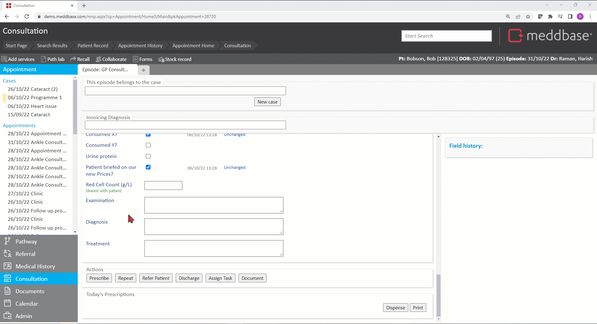
Important information about a patient can be typed into the Admin Notes found on the Patient Record page.
To access the Patient Record page:
If any relevant information had been entered into the Admin Notes* free text field, e.g. Patient has trouble hearing, the outline of the field will flash red to draw the user's attention.
When adding new information into the field the outline of the field flashes green to inform the user that the information was saved.
*The position of this field on the Patient Record, e.g. front and centre can be changed by clicking Layout > Unlock Layout for Editing, dragging the Admin Notes field to the desired position on the page and clicking Layout>Lock Layout
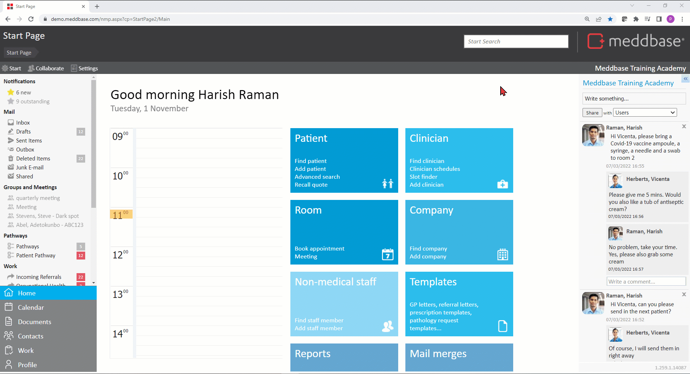
In Meddbase, when users are dispensing Products and/or Vaccines that are under Batch Control* in Consultation there is an option to Show expired batches and dispense from them.
In these cases, a pop-up warning will be displayed requiring the user to click Accept and continue in order to dispense stock from an expired batch.
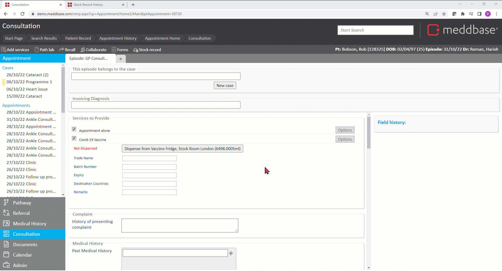
Wiping (completely removing) a Patient Record in Meddbase is a 2-step process, each with its own pop-up warnings:
1. Delete- deleting a Patient Record changes its status from Active to Deleted. Deleted records can be restored.
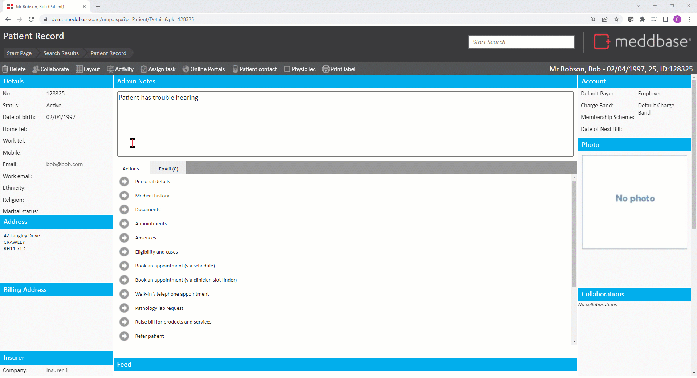
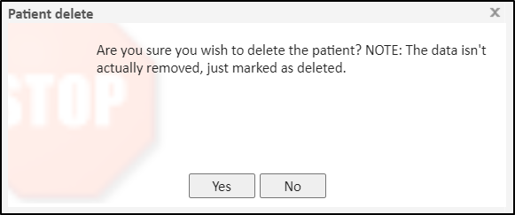
2. Wipe - a deleted record can be wiped, so completely removed from the database.
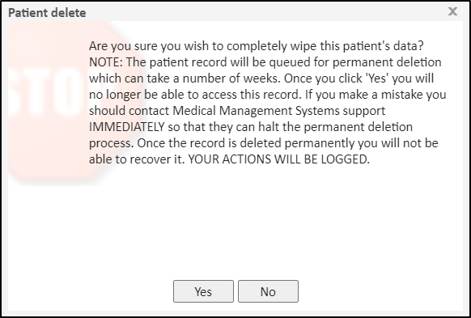
Having confirmed the patient Wipe the user will be presented with a screen containing a final message:
The patient record is now queued for permanent deletion which can take a number of weeks. The record is inaccessible immediately. If you have made a mistake you should contact Medical Management Systems support IMMEDIATELY so that they can halt the permanent deletion process. Once the record is deleted permanently you will not be able to recover it. YOUR ACTIONS HAVE BEEN LOGGED."
The ability for Non-attendees to provide notes in consultation is controlled by a checkbox found under Admin > Configuration > Application > Non-attendees can provide notes in consultation
If this checkbox is left unchecked, a user who is not the primary attendee in an appointment will not be able to access the Clinical Form and add notes.
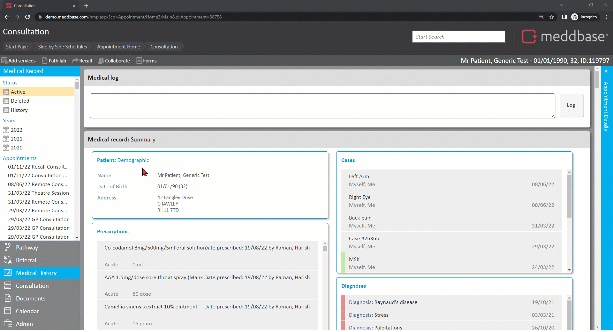
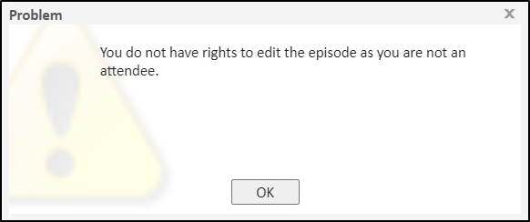
Meddbase prevents Non-medical users from Prescribing Drugs in Consultation.
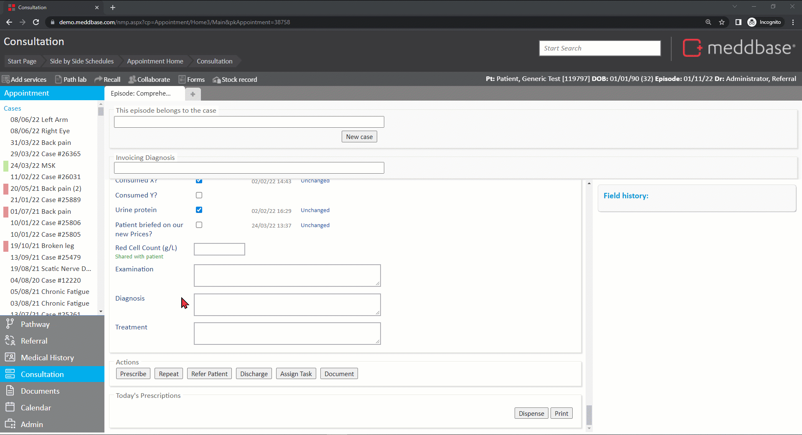
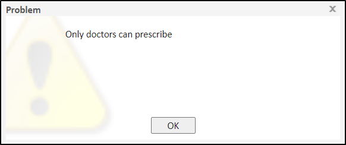